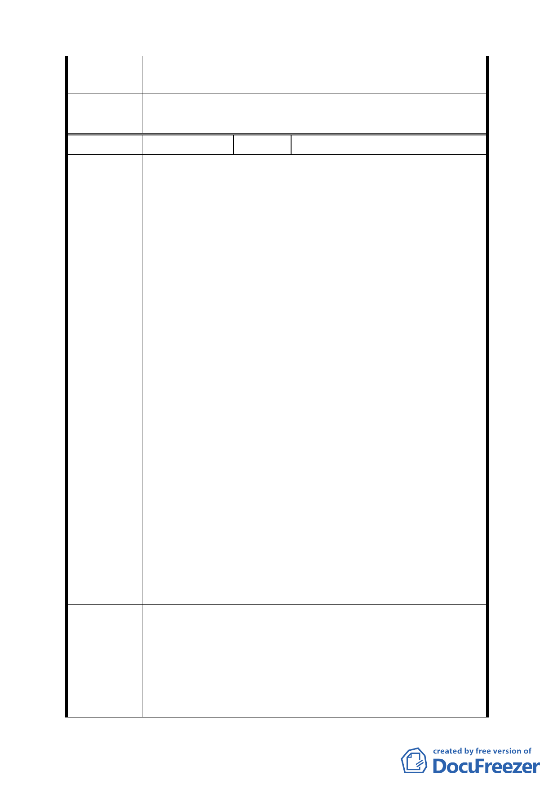

委員會議
決議
編號
陳情理由
建議辦法
三、水權之申請與分配，應以既有的溫泉業者優先申請與分
配，尚屬合理。
同編號 1。
１４
陳情人 皇池溫泉養生美食館
一、依都市計畫書二、土地使用分區管制所述：規定餐飲用
途營業面積不可大於溫泉用途面積，此規定實非合理之
比例，應考量目前溫泉浴室與用餐之使用現況，目前作
為溫泉浴室之使用面積約佔 5/2，不含廚房之餐飲用途
面積約佔 5/3。
二、變更計畫內容：二、土地使用分區管制：（二）溫泉產
業特定專用區範圍內土地其建敝率與容積率分別不得
超過 40％及 80％。
三、開發許可規範原則所述，（二）溫泉產業特定專用區內
開發基地，依其自然條件不同，於申請開發許可時應依
相關規定辦理。其中第一條：申請開發許可使用之建築
物，應坐落於非屬本府建設局編訂「臺北市環境地質資
料庫」中土地利用潛力低及很低地區，及溫泉露頭範圍
之地區且應符合台北市山坡地開發建築要點之規定。
四、開發許可規範原則第四條：申請開發基地應分析環境地
質如地質天然災害及山坡地邊坡坍方或地滑等災害，公
部門應先進行整治工程。
五、開發許可規範原則（二）第十三條：既有合法建築物不
符前款規定時，仍得繼續為原有合法使用，但不得申請
變更為營業使用，本計畫公告實施後之既有原不合臺北
市土使用分區管制規則之建築，應於公告實施後依前述
開發許可原則 2 年內完成申請核定。核定後 3 年建築完
成，未於期限內依規定完成申請並獲核可，且完成建築
之基地及建築，不得再提出申請供營業使用。
一、建議餐飲用地面積應以既成之使用比例為依據。
二、應增述原有之溫泉經營業者應得以既成之建蔽率與容積
率提出申請不應受土地使用分區管制之建築容積規定
所限制。
三、應明確列出：所謂土地利用潛力低及很低地區及溫泉露
頭範圍內之地區包括溫泉區內的哪些地號土地，以免產
12